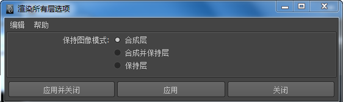
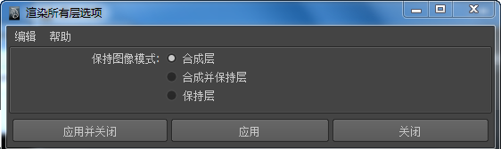
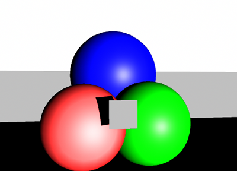
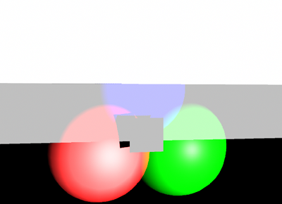
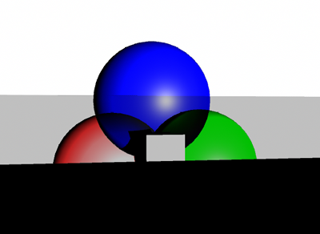
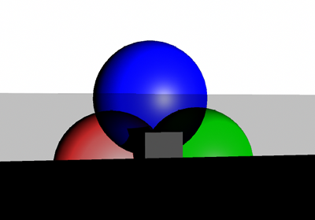
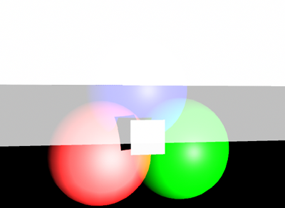
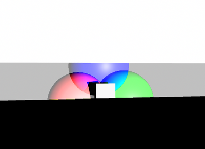

默认情况下，“渲染视图”(Render View)将以指定的融合模式显示场景中的所有层合成视图。通过更改“渲染视图”(Render View)中的的值或“渲染层编辑器”(Render Layer editor)中的的值，可以来覆盖此默认值。
可以选择仅显示指定层或仅在显示“渲染视图”(Render View)中选定层。
此外，可以选择保留构成合成“渲染视图”(Render view)的所有图像或只是渲染单个合成图像。
预览渲染视图中的渲染层
- 若要查看以指定的融合模式设置合成的所有层，需启用“渲染层编辑器”(Render Layer editor)的“选项”(Options)菜单或“渲染视图”(Render View)的“渲染”(Render)菜单中的“渲染所有层”(Render All Layers)选项。
- 默认情况下，所有层的合成结果在“渲染视图”(Render View)中显示。
- 若要查看作为单个图像渲染的所有层，请将“渲染所有层”(Render All Layers)选项（“选项 > 渲染所有层”(Options > Render All Layers) >
 ）从“合成层”(Composite Layers)改为“合成并保持层”(Composite and Keep Layers)，或仅启用“保持层”(Keep Layers)。
注： 使用“保持层”(Keep Layers)会显著增加 Maya 的内存使用量。连续使用会向“渲染视图”(Render View)中填充越来越多的图像。必要时必须手动清除图像。
）从“合成层”(Composite Layers)改为“合成并保持层”(Composite and Keep Layers)，或仅启用“保持层”(Keep Layers)。
注： 使用“保持层”(Keep Layers)会显著增加 Maya 的内存使用量。连续使用会向“渲染视图”(Render View)中填充越来越多的图像。必要时必须手动清除图像。 - 若要仅预览某些层的合成效果，请启用“渲染所有层”(Render All Layers)，并关闭要排除层的“渲染”(Rendering)标志（单击层名称旁边的 图标）。
- 若要预览特定层，请选中该层并确保“渲染所有层”(Render All Layers)选项处于禁用状态。
同样，命令行渲染也支持层。如果在命令行渲染中使用 -r file 标志，则将使用文件中指定的渲染器对各层进行渲染。有关详细信息，请参见通过层进行批渲染和命令行渲染。
层融合模式
设定层的融合模式
- 选择一个层。
- 在“渲染层编辑器”(Render layer editor)顶部的下拉菜单中选择一个层融合模式。
当激活单个层时，将看到层融合模式的更改。
下图示例为一个非常简单的场景：在红色、绿色和蓝色三个球体前有小平面向其投射阴影。
球体位于前景中，并以多个融合模式在白色、灰色和黑色背景下得以渲染。
Maya 支持以下渲染层融合模式：
| 融合模式 | 描述 | 示例 |
|---|---|---|
|
法线(Normal) |
前景纹理像贴花一样应用到背景中。贴花的形状由前景 Alpha 决定。 |

|
|
变亮(Lighten) |
使用渲染层中任意颜色较浅的像素作为结果颜色。 |

|
|
变暗(Darken) |
使用渲染层中任意颜色较深的像素作为结果颜色。 |

|
|
相乘(Multiply) |
用渲染层颜色相乘获得合成的渲染器颜色。结果颜色始终为较深的颜色。将任何颜色与黑色（值为 0）相乘将生成黑色。将任何颜色与白色（值为 1）相乘，颜色将保持不变。 |

|
|
滤色(Screen) |
将渲染层的反向和合成的层颜色相乘。结果颜色始终为较浅的颜色。用黑色屏蔽颜色将保持不变。用白色屏蔽将生成白色。 |

|
|
叠加(Overlay) |
根据合成的颜色将颜色相乘。样式或颜色会在保留基底颜色的高光和阴影同时与现有像素相叠加。将基底颜色与渲染层颜色混合可表示原始颜色的亮度或暗度。 |

|